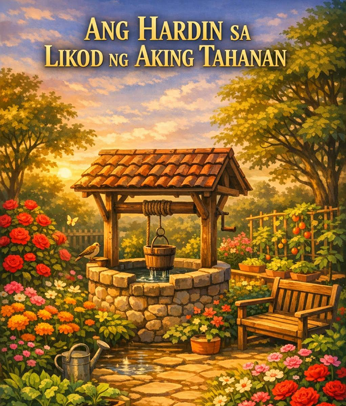

Asignatura: Filipino
Baitang: Senior High School
Paksa: Tekstong Deskriptibo
Pamagat ng Babasahin: Ang Hardin sa Likod ng Aking Tahanan
Estratehiya: Graphic Organizer (Concept Web, Sensory Chart (Limang Pandama) at Visualization (Pag-iimagine))
Pagkatapos ng gawain, ang mag-aaral ay inaasahang:
Visualization
Panuto: Ipikit ang mga mata sa loob ng 30 segundo. Isipin ang isang lugar na nagpapasaya at nagpapakalma sa'yo (bakuran, probinsya, tabing-dagat, hardin).
Panuto (Pinaghalo-halong Salita)
Ayusin ang mga pinaghalo-halong titik upang mabuo ang tamang salita batay sa kahulugan sa pangungusap. Isulat ang sagot sa patlang.
Marigold- uri ng bulaklak na dilaw /orange
Basahin ang tekstong “Ang Hardin sa Likod ng Aking Tahanan” Pagkatapos, sagutin ang mga tanong at gawain sa ibaba.

Ang Hardin sa Likod ng Aking Tahanan
Sa likod ng aking bahay, may isang hardin na puno ng buhay at kulay. Sa bawat sulok, makikita ang iba't ibang halaman. Mayroong mga rosas na may pulang makinang na talulot, marigold na sumasayaw sa sikat ng araw, at mga halamang gulay na nagbibigay ng pagkain sa pamilya. Ang bango ng bulaklak ay humahalo sa amoy ng sariwang damo, at tuwing umaga, naririnig ang huni ng mga ibon at ang simoy ng hangin na dumadampi sa malalambot na dahon.
Sa gitna ng hardin, may maliit na balon ng tubig na umaagos ang malinaw na tubig, nagbibigay ng malamig na simoy at nagpapaganda sa paligid. Sa tabi nito, may upuan kung saan maaaring maupo at mamahinga habang pinagmamasdan ang kagandahan ng hardin. Ang bawat halaman ay maingat na inaalagaan, tinutubigan tuwing umaga, at pinuputulan ang tuyot o sirang dahon upang manatiling malusog ang hardin.
Ang hardin na ito ay hindi lamang nagbibigay ng kasiyahan sa mata kundi nagdadala rin ng kapayapaan sa puso. Tuwing naglalakad ako dito, pakiramdam ko’y napapalayo ako sa abala ng mundo, at nararamdaman ko ang tahimik na koneksyon sa kalikasan. Sa bawat kulay, amoy, at tunog ng hardin, natututo akong pahalagahan ang kagandahan ng simpleng bagay at ang tamis ng kapayapaan sa paligid na puno ng pagmamahal at pag-aalaga.
Panuto: Gumawa ng concept web tungkol sa “Hardin” at ilagay ang mga
detalyeng naglalarawan dito.
Panuto: Punan ang tsart batay sa mga detalyeng binanggit sa teksto
Panuto: Sagutin ang mga tanong batay sa teksto.
1. Ano ang pangunahing laman ng hardin na binanggit sa teksto?
2. Ano ang tunog ang naririnig sa hardin tuwing umaga?
3. Ano ang ginagawa ng nagsasalaysay sa hardin?
4. Ano ang nararamdaman ng nagsasalaysay habang nagmamasid sa mga halaman?
Panuto: Sumulat ng maikling deskriptibong talata tungkol sa isang lugar na nagpapasaya saýo (hal. bakuran, silid, paboritong tambayan). Gumamit ng detalyeng pandama (nakikita, naririnig, naaamoy, nararamdaman).
Pamantayan sa Pagmamarka (Rubric – Maikli)
❖ Nilalaman at Mensahe (5 pts) – malinaw na naipakita ang ideya ng
kapayapaan at pag-aalaga
❖ Pagkamalikhain (5 pts) – orihinal ang ideya at presentasyon
❖ Kalinisan at Ayos (5 pts) – maayos ang gawa at malinaw ang
sulat/guhit
❖ Pagsunod sa Panuto (5 pts) – nasunod ang napiling gawain
❖ Kabuuan: 20 puntos
Panuto: Kumpletuhin ang pangungusap:
1. Natutunan ko sa teksto na ang kapaligiran ay...
2.Kung ako ay may sariling hardin o paboritong lugar, gagawin ko itong...